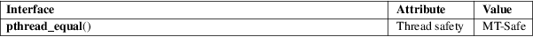

pthread_equal − compare thread IDs
POSIX threads library (libpthread, −lpthread)
#include <pthread.h>
int pthread_equal(pthread_t t1, pthread_t t2);
The pthread_equal() function compares two thread identifiers.
If the two thread IDs are equal, pthread_equal() returns a nonzero value; otherwise, it returns 0.
This function always succeeds.
For an explanation of the terms used in this section, see attributes(7).

POSIX.1-2008.
POSIX.1-2001.
The pthread_equal() function is necessary because thread IDs should be considered opaque: there is no portable way for applications to directly compare two pthread_t values.
pthread_create(3), pthread_self(3), pthreads(7)